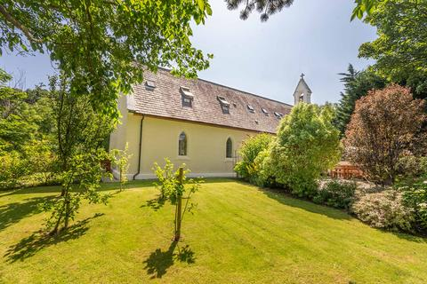

<div class='home' style="padding: 50px;padding-top: 0px;">
    <div class="container-fluid" style="background-color:white;left: 50px; border: 2px solid black; border-radius: 10px;">
        <div class="row" style='background-color: rgb(13, 79, 202);border: 2px solid black;'>
        <div class="row" style="margin-top: 2px; margin-left: 2px; margin-right: 2px;">
            <div class="col-md-10">
               
                <div class="topnav">
                    <a class="active" href="#home">Home</a>
                    <a href="hnews.html">HorizoNews</a>
                    <a href="programs.html">Programs</a>
                    <a href="methedologies.html">Methodology</a>
                    <a href="faculty.html">Faculty</a>
                    <a href="admission.html">Addmission</a>
                    <a href="courses.html">E-Course</a>
                    <a href="contact.html">Contact-Us</a>
                  </div>
                  <div class="all" style="background-color: rgb(230, 234, 238);">
                 
                    <div class="col-md-8" style="background-color: rgb(106, 202, 219);">
                        <div class="col-md-2">
                            
                        </div>
                        <p style="font-size: medium;">11/3/2011 - Launching MFA in Filmmaking</p>
                        <p style="font-size: x-small;">Cinema is a global artform. It is high art. It is populist. It livens the heart and can dysregulate the intellect. It enrages. It excites. We cry, laugh,scream and might even decide to make a change. Cinema is the perfect entry into a conversation with a stranger - ‘what is your favorite film?’ It is  how we create shared myths that bind us throughout the world. We are in a period where corporate media can dominate the world while  <br/>at the same time – filmmakers with mobile phones and a computer can create a film that has a sweeping impact. <br/> 
                        The MFA in Filmmaking trains students in this context. Our students are mentored in the fundamentals of storytelling with an emphasis on impact. How will the film reach an audience? Does it have something new to say? Is it ambitious in vision and technique? Each student spends two years producing a dynamic thesis film where they are mentored all along the way by working professionals.<br/> We seek to train the next generation of narrative and documentary filmmakers in a worldwide context who will go on to move the needle in the universe towards good.
                        </div>
                    </p>
                    </div>
                </div>
            </div>
                  <style>
                      .topnav {
 
  overflow: hidden;
}

/* Style the links inside the navigation bar */
.topnav a {
  float: left;
  color: #f2f2f2;
  text-align: center;
  padding: 14px 16px;
  text-decoration: none;
  font-size: 17px;
}

/* Change the color of links on hover */
.topnav a:hover {
  background-color: #ddd;
  color: black;
}

/* Add a color to the active/current link */
.topnav a.active {
  background-color: #04AA6D;
  color: white;
}
                  </style>
        </div>
                         <style>
                            .col-md-9{
                                  
                                float: left;
                            }
                            </style><style>
                            .col-md-2{
                                  
                                float:left;
                            }
                           
                        </style>
                       
                             <style>
                                .col-md-7{
                                      
                                    float:right;
                                }
                                </style>
                                 <style>
                                    .col-md-5{
                                          
                                        float:left;
                                       
                                    }
                                    </style>
                                <style>
                                    .row{
                                          
                                        float:right;
                                    }
                                    </style>
                                     <style>
                                        .col-md-20{
                                              
                                            float:left;
                                        }
                                        </style>
                                        <style>
                                            .col-md-9{
                                                  
                                                float:right;
                                            }
                                            </style>
                                            <style>
                                                .coll12{
                                                      
                                                    float:left;
                                                }
                                                </style>
                        
                    <div class="col-md-5" >
                        <div class="col-md-7">
                            <div class="row" style="background-color: gainsboro; ">
                                <p style="color: rgb(121, 121, 202);">Campus Study</p>
                                <p class="col-md-20"style="font-size: x-small;">Our on campus program allow you to interact <br/>with faculty and other students during recidency<br/> periods and complete your work online.<br/> It is another flexible solution that will enhance your life.</p>
                                
                               <br/> <div class="col-md-9" style="background-color:lightskyblue">
                                    <p style="color:lightslategray">Online study</p>
                                    
                                    <p class="col-md-9" style="font-size: x-small;">Our online program will allow you to work at your own <br/>pace while you keep your job and activities. You <br/>can pursue quality education without leaving <br/>home. This option is also less costly and also available <br/>in a ny country across the world.</p>
                                </div> 
                                <div class="row1" style="background-color: gainsboro">
                                    <p style="font-family: 'Gill Sans', 'Gill Sans MT', Calibri, 'Trebuchet MS', sans-serif;color:rgb(3, 57, 112)">Experience the new virtual campus</p>
                                    <div class="row1">
                                        <div class="col-md-12">
                                            <div class="col-md-2"></div>
                                            <p class="col-md-10"style="background-color: white;border: 1px solid black; border-radius: 5px; font-size: x-small;margin-bottom: 5px;">Horizons University is one of the rate few Universities in the world to offer entire<br/> course modules in virtual campus, along with live presentation from keynote <br/>speakers, facilitating learning, communications and interaction amongst the community.
                                            </p>
                                       
                                    </div>
                                </div>
                                </div>  </div><div class="row" style="background-color: white;">

                        <p style="font-size: medium;">Welcome!</p>
                        <p style="font-size: x-small;color: blue;">Are you looking for a degree that is available fully online,<br/> that is going to make and impact on your life and you job?
                        </p>
                     <p style="font-size: x-small;color: blue;">
                        Are you looking for something different, modern, truly <br/>international yet adapted to you and your culture?
                        </p>
                        <p style="font-size: x-small;">Horisons university has the solution.<br/>Our mission is to provide the educational experience that <br/>fits our student needs in any part of the world and <br/>contribute to their personal and proffesional fulfillment.<br/>We provide programs that are flexible in time, that take<br/> into account the persons experience amd that are affordable.<br/> We are specialized in distant education but we also offer on campus programs.</p>
                        <br/>
                        <div  >
                            <br/>  
                        
                           <div class="coll12" style="color: rgb(121, 121, 202);">
                            <a href="programs.html" class="col-md-6" style="background-color: lightskyblue;border: 1px solid yellow;">Click here for detailed course details</a>

                           </div>
                            
                        </div>
                        
                        </div>
                        
                    </div>
                   
                     </div> 
                     
                    </div>
            </div>
    </div>
</div>